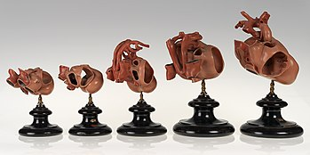
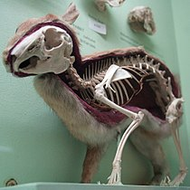
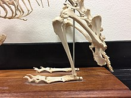
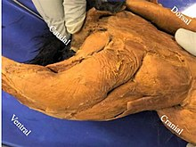
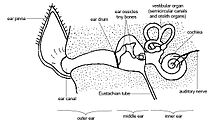
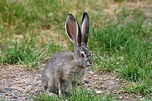
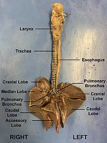
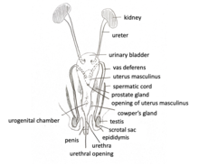
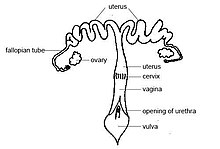

Because the rabbit's epiglottis is engaged over the soft palate except
when swallowing, the rabbit is an obligate nasal breather. Rabbits
have two sets of incisor teeth, one behind the other. This way they
can be distinguished from rodents, with which they are often
confused.[6] Carl Linnaeus originally grouped rabbits and rodents
under the class Glires; later, they were separated as the scientific
consensus is that many of their similarities were a result of
convergent evolution. However, recent DNA analysis and the discovery
of a common ancestor has supported the view that they do share a
common lineage, and thus rabbits and rodents are now often referred to
together as members of the superorder Glires.[7]

Development of the Rabbit Heart (Wax Model)
Morphology
Since speed and agility are a rabbit's main defenses against predators
(including the swift fox), rabbits have large hind leg bones and well
developed musculature. Though plantigrade at rest, rabbits are on
their toes while running, assuming a more digitigrade form. Rabbits
use their strong claws for digging and (along with their teeth) for
defense.[8] Each front foot has four toes plus a dewclaw. Each hind
foot has four toes (but no dewclaw)
Most wild rabbits (especially compared to hares) have relatively full,
egg-shaped bodies. The soft coat of the wild rabbit is agouti in
coloration (or, rarely, melanistic), which aids in camouflage. The
tail of the rabbit (with the exception of the cottontail species) is
dark on top and white below. Cottontails have white on the top of
their tails
As a result of the position of the eyes in its skull, the rabbit has a
field of vision that encompasses nearly 360 degrees, with just a small
blind spot at the bridge of the nose.
Skeleton of the Rabbit
Hind Limb Element
The anatomy of rabbits' hind limbs are structurally similar to that of
other land mammals and contribute to their specialized form of
locomotion. The bones of the hind limbs consist of long bones (the
femur, tibia, fibula, and phalanges) as well as short bones (the
tarsals). These bones are created through endochondral ossification
during development. Like most land mammals, the round head of the
femur articulates with the acetabulum of the ox coxae. The femur
articulates with the tibia, but not the fibula, which is fused to the
tibia. The tibia and fibula articulate with the tarsals of the pes,
commonly called the foot. The hind limbs of the rabbit are longer than
the front limbs. This allows them to produce their hopping form of
locomotion. Longer hind limbs are more capable of producing faster
speeds. Hares, which have longer legs than cottontail rabbits, are
able to move considerably faster.[12] Rabbits stay just on their toes
when moving this is called Digitigrade locomotion. The hind feet have
four long toes that allow for this and are webbed to prevent them from
spreading when hopping.[13] Rabbits do not have paw pads on their feet
like most other animals that use digitigrade locomotion. Instead, they
have coarse compressed hair that offers protection.[14]

This image comes from a specimen in the Pacific Lutheran University natural history collection. It displays all of the skeletal articulations of rabbit's hind limbs.
Musculatur
Rabbits have muscled hind legs that allow for maximum force,
maneuverability, and acceleration that is divided into three main
parts; foot, thigh, and leg. The hind limbs of a rabbit are an
exaggerated feature, that are much longer than the forelimbs providing
more force. Rabbits run on their toes to gain the optimal stride
during locomotion. The force put out by the hind limbs is contributed
to both the structural anatomy of the fusion tibia and fibula, and
muscular features.[15] Bone formation and removal, from a cellular
standpoint, is directly correlated to hind limb muscles. Action
pressure from muscles creates force that is then distributed through
the skeletal structures. Rabbits that generate less force, putting
less stress on bones are more prone to osteoporosis due to bone
rarefaction.[16] In rabbits, the more fibers in a muscle, the more
resistant to fatigue. For example, hares have a greater resistance to
fatigue than cottontails. The muscles of rabbit's hind limbs can be
classified into four main categories: hamstrings, quadriceps,
dorsiflexors, or plantar flexors. The quadriceps muscles are in charge
of force production when jumping. Complementing these muscles are the
hamstrings which aid in short bursts of action. These muscles play off
of one another in the same way as the plantar flexors and doriflexors,
contributing to the generation and actions associated with force.

The rabbits hind limb (lateral view) includes muscles involved in the quadriceps and hamstrings.
Ears
Within the order lagomorphs, the ears are utilized to detect and avoid
predators. In the family Leporidae, the ears are typically longer than
they are wide. For example, in black tailed jack rabbits, their long
ears cover a greater surface area relative to their body size that
allow them to detect predators from far away. Contrasted to cotton
tailed rabbits, their ears are smaller and shorter, requiring
predators to be closer to detect them before they can flee. Evolution
has favored rabbits having shorter ears so the larger surface area
does not cause them to lose heat in more temperate regions. The
opposite can be seen in rabbits that live in hotter climates, mainly
because they possess longer ears that have a larger surface area that
help with dispersion of heat as well as the theory that sound does not
travel well in more arid air, opposed to cooler air. Therefore, longer
ears are meant to aid the organism in detecting predators sooner
rather than later in warmer temperatures.[18] The rabbit is
characterized by its shorter ears while hares are characterized by
their longer ears.[19] Rabbits' ears are an important structure to aid
thermoregulation and detect predators due to how the outer, middle,
and inner ear muscles coordinate with one another. The ear muscles
also aid in maintaining balance and movement when fleeing predators.

Anatomy of Mammalian Ears
Outer Ear
The auricle, also known as the pinna, is a rabbit's outer ear.[21] The
rabbit's pinnae represent a fair part of the body surface area. It is
theorized that the ears aid in dispersion of heat at temperatures
above 30 °C with rabbits in warmer climates having longer pinnae due
to this. Another theory is that the ears function as shock absorbers
that could aid and stabilize rabbit's vision when fleeing predators,
but this has typically only been seen in hares.[22] The rest of the
outer ear has bent canals that lead to the eardrum or tympanic
membrane.
Middle Ear
The middle ear is filled with three bones called ossicles and is
separated by the outer eardrum in the back of the rabbit's skull. The
three ossicles are called hammer, anvil, and stirrup and act to
decrease sound before it hits the inner ear. In general, the ossicles
act as a barrier to the inner ear for sound energy.
Inner Ear
Inner ear fluid called endolymph receives the sound energy. After
receiving the energy, later within the inner ear there are two parts:
the cochlea that utilizes sound waves from the ossicles and the
vestibular apparatus that manages the rabbit's position in regards to
movement. Within the cochlea there is a basilar membrane that contains
sensory hair structures utilized to send nerve signals to the brain so
it can recognize different sound frequencies. Within the vestibular
apparatus the rabbit possesses three semicircular canals to help
detect angular motion.
Thermolegulation
Thermoregulation is the process that an organism utilizes to maintain
an optimal body temperature independent of external conditions.[24]
This process is carried out by the pinnae which takes up most of the
rabbit's body surface and contain a vascular network and arteriovenous
shunts.[25] In a rabbit, the optimal body temperature is around
38.5–40℃.[26] If their body temperature exceeds or does not meet this
optimal temperature, the rabbit must return to homeostasis.
Homeostasis of body temperature is maintained by the use of their
large, highly vascularized ears that are able to change the amount of
blood flow that passes through the ears.
Constriction and dilation of blood vessels in the ears are used to
control the core body temperature of a rabbit. If the core temperature
exceeds its optimal temperature greatly, blood flow is constricted to
limit the amount of blood going through the vessels. With this
constriction, there is only a limited amount of blood that is passing
through the ears where ambient heat would be able to heat the blood
that is flowing through the ears and therefore, increasing the body
temperature. Constriction is also used when the ambient temperature is
much lower than that of the rabbit's core body temperature. When the
ears are constricted it again limits blood flow through the ears to
conserve the optimal body temperature of the rabbit. If the ambient
temperature is either 15 degrees above or below the optimal body
temperature, the blood vessels will dilate. With the blood vessels
being enlarged, the blood is able to pass through the large surface
area which causes it to either heat or cool down.
During the summer, the rabbit has the capability to stretch its pinnae
which allows for greater surface area and increase heat dissipation.
In the winter, the rabbit does the opposite and folds its ears in
order to decrease its surface area to the ambient air which would
decrease their body temperature.
The jackrabbit has the largest ears within the Oryctolagus cuniculus
group. Their ears contribute to 17% of their total body surface area.
Their large pinna were evolved to maintain homeostasis while in the
extreme temperatures of the desert.

Rabbits use their large vascularized ears which aid in thermoregulation to keep their body temperature at an optimal level.
Respitory System
The rabbit's nasal cavity lies dorsal to the oral cavity, and the two
compartments are separated by the hard and soft palate.[27] The nasal
cavity itself is separated into a left and right side by a cartilage
barrier, and it is covered in fine hairs that trap dust before it can
enter the respiratory tract.[28][27] As the rabbit breathes, air flows
in through the nostrils along the alar folds. From there, the air
moves into the nasal cavity, also known as the nasopharynx, down
through the trachea, through the larynx, and into the lungs.[28][29]
The larynx functions as the rabbit's voice box, which enables it to
produce a wide variety of sounds.[28] The trachea is a long tube
embedded with cartilaginous rings that prevent the tube from
collapsing as air moves in and out of the lungs. The trachea then
splits into a left and right bronchus, which meet the lungs at a
structure called the hilum. From there, the bronchi split into
progressively more narrow and numerous branches. The bronchi branch
into bronchioles, into respiratory bronchioles, and ultimately
terminate at the alveolar ducts. The branching that is typically found
in rabbit lungs is a clear example of monopodial branching, in which
smaller branches divide out laterally from a larger central branch.[
Rabbits breathe primarily through their noses due to the fact that the
epiglottis is fixed to the backmost portion of the soft palate.[29]
Within the oral cavity, a layer of tissue sits over the opening of the
glottis, which blocks airflow from the oral cavity to the trachea.[27]
The epiglottis functions to prevent the rabbit from aspirating on its
food. Further, the presence of a soft and hard palate allow the rabbit
to breathe through its nose while it feeds.[2
Rabbits lungs are divided into four lobes: the cranial, middle,
caudal, and accessory lobes. The right lung is made up of all four
lobes, while the left lung only has two: the cranial and caudal
lobes.[30] In order to provide space for the heart, the left cranial
lobe of the lungs is significantly smaller than that of the right.[27]
The diaphragm is a muscular structure that lies caudal to the lungs
and contracts to facilitate respiration.

Ventral view of dissected rabbit lungs with key structures labeled./figcaption>
Digestion
Rabbits are herbivores that feed by grazing on grass, forbs, and leafy
weeds. In consequence, their diet contains large amounts of cellulose,
which is hard to digest. Rabbits solve this problem via a form of
hindgut fermentation. They pass two distinct types of feces: hard
droppings and soft black viscous pellets, the latter of which are
known as caecotrophs or "night droppings" [31] and are immediately
eaten (a behaviour known as coprophagy). Rabbits reingest their own
droppings (rather than chewing the cud as do cows and numerous other
herbivores) to digest their food further and extract sufficient
nutrients.[32]
Rabbits graze heavily and rapidly for roughly the first half-hour of a
grazing period (usually in the late afternoon), followed by about half
an hour of more selective feeding.[citation needed] In this time, the
rabbit will also excrete many hard fecal pellets, being waste pellets
that will not be reingested.[citation needed] If the environment is
relatively non-threatening, the rabbit will remain outdoors for many
hours, grazing at intervals.[citation needed] While out of the burrow,
the rabbit will occasionally reingest its soft, partially digested
pellets; this is rarely observed, since the pellets are reingested as
they are produced.
Hard pellets are made up of hay-like fragments of plant cuticle and
stalk, being the final waste product after redigestion of soft
pellets. These are only released outside the burrow and are not
reingested. Soft pellets are usually produced several hours after
grazing, after the hard pellets have all been excreted.[citation
needed] They are made up of micro-organisms and undigested plant cell
walls.
Rabbits are hindgut digesters. This means that most of their digestion
takes place in their large intestine and cecum. In rabbits, the cecum
is about 10 times bigger than the stomach and it along with the large
intestine makes up roughly 40% of the rabbit's digestive tract.[33]
The unique musculature of the cecum allows the intestinal tract of the
rabbit to separate fibrous material from more digestible material; the
fibrous material is passed as feces, while the more nutritious
material is encased in a mucous lining as a cecotrope. Cecotropes,
sometimes called "night feces", are high in minerals, vitamins and
proteins that are necessary to the rabbit's health. Rabbits eat these
to meet their nutritional requirements; the mucous coating allows the
nutrients to pass through the acidic stomach for digestion in the
intestines. This process allows rabbits to extract the necessary
nutrients from their food.
The chewed plant material collects in the large cecum, a secondary
chamber between the large and small intestine containing large
quantities of symbiotic bacteria that help with the digestion of
cellulose and also produce certain B vitamins. The pellets are about
56% bacteria by dry weight, largely accounting for the pellets being
24.4% protein on average. The soft feces form here and contain up to
five times the vitamins of hard feces. After being excreted, they are
eaten whole by the rabbit and redigested in a special part of the
stomach. The pellets remain intact for up to six hours in the stomach;
the bacteria within continue to digest the plant carbohydrates. This
double-digestion process enables rabbits to use nutrients that they
may have missed during the first passage through the gut, as well as
the nutrients formed by the microbial activity and thus ensures that
maximum nutrition is derived from the food they eat.[10] This process
serves the same purpose in the rabbit as rumination does in cattle and
sheep.
Rabbits are incapable of vomiting.[36] Because rabbits cannot vomit,
if buildup occurs within the intestines (due often to a diet with
insufficient fiber[37]), intestinal blockage can occur.[38]
The adult male reproductive system forms the same as most mammals with the seminiferous tubular compartment containing the Sertoli cells and an adluminal compartment that contains the Leydig cells.[39] The Leydig cells produce testosterone, which maintains libido[39] and creates secondary sex characteristics such as the genital tubercle and penis. The Sertoli cells triggers the production of Anti-Müllerian duct hormone, which absorbs the Müllerian duct. In an adult male rabbit, the sheath of the penis is cylinder-like and can be extruded as early as two months of age.[40] The scrotal sacs lay lateral to the penis and contain epididymal fat pads which protect the testes. Between 10 and 14 weeks, the testes descend and are able to retract into the pelvic cavity in order to thermoregulate.[40] Furthermore, the secondary sex characteristics, such as the testes, are complex and secrete many compounds. These compounds includes fructose, citric acid, minerals, and a uniquely high amount of catalase.[39]
The adult female reproductive tract is bipartite, which prevents an embryo from translocating between uteri.[41] The two uterine horns communicate to two cervixes and forms one vaginal canal. Along with being bipartite, the female rabbit does not go through an estrus cycle, which causes mating induced ovulation.[4
The average female rabbit becomes sexually mature at 3 to 8 months of age and can conceive at any time of the year for the duration of her life. However, egg and sperm production can begin to decline after three years.[39] During mating, the male rabbit will mount the female rabbit from behind and insert his penis into the female and make rapid pelvic hip thrusts. The encounter lasts only 20–40 seconds and after, the male will throw himself backwards off the female.[
The rabbit gestation period is short and ranges from 28 to 36 days with an average period of 31 days. A longer gestation period will generally yield a smaller litter while shorter gestation periods will give birth to a larger litter. The size of a single litter can range from four to 12 kits allowing a female to deliver up to 60 new kits a year. After birth, the female can become pregnant again as early as the next day.[40]
The mortality rates of embryos are high in rabbits and can be due to infection, trauma, poor nutrition and environmental stress so a high fertility rate is necessary to counter this.[40]

Diagram of the male rabbit reproductive system with main components labeled.

Diagram of the female rabbit reproductive system with main components labeled.
Sleep
Rabbits may appear to be crepuscular, but their natural inclination is toward nocturnal activity.[43] In 2011, the average sleep time of a rabbit in captivity was calculated at 8.4 hours per day.[44] As with other prey animals, rabbits often sleep with their eyes open, so that sudden movements will awaken the rabbit to respond to potential danger.[45]
In addition to being at risk of disease from common pathogens such as Bordetella bronchiseptica and Escherichia coli, rabbits can contract the virulent, species-specific viruses RHD ("rabbit hemorrhagic disease", a form of calicivirus)[46] or myxomatosis. Among the parasites that infect rabbits are tapeworms (such as Taenia serialis), external parasites (including fleas and mites), coccidia species, and Toxoplasma gondii.[47][48] Domesticated rabbits with a diet lacking in high fiber sources, such as hay and grass, are susceptible to potentially lethal gastrointestinal stasis.[49] Rabbits and hares are almost never found to be infected with rabies and have not been known to transmit rabies to humans.[50]
Encephalitozoon cuniculi, an obligate intracellular parasite is also capable of infecting many mammals including rabbits.